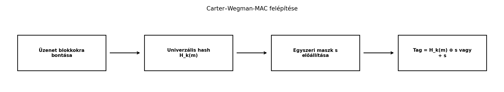

A blokkrejtjel-alapú MAC-ek, például a CBC-MAC vagy a CMAC, minden üzenetblokknál meghívják az AES-t. Ez nagy átvitelű hálózatokon, például TLS-ben, számítási szűk keresztmetszet lehet: egy 10 Gbit/s-os csatornán másodpercenként kb. 78 millió 128 bites blokk hitelesítése kell () ahhoz, hogy a MAC-számítás ne akadályozza a forgalmat. A Carter–Wegman-típusú MAC-ek más utat választanak: az üzenetet egy rendkívül gyors, de önmagában nem rejtett hash-függvénnyel tömörítik, majd a kapott rövid értéket egyszer használatos titkos maszkkal (OTP-szerűen) rejtik. Így a lassú blokkrejtjel csak az egyszeri maszk előállításához kell, az üzenethossztól szinte függetlenül.
A gyakorlatban két ilyen konstrukció dominál: a GHASH, amely az AES-GCM hitelesítő magja, és a Poly1305, amely a ChaCha20-Poly1305 AEAD-ban és számos modern protokollban, például a TLS 1.3-ban szerepel. Mindkettő mögött az univerzális hash fogalma áll.
Képzeljük el, hogy van egy rövid, rögzített hosszúságú „ujjlenyomat” függvényünk, például a polinomhash: az üzenet blokkjait egy kulccsal összeszorozzuk és modulárisan összegezzük. Az eredmény nem rejtett, de két különböző üzenetre csak kis valószínűséggel ad ugyanazt az értéket. Ha ezt az ujjlenyomatot egy egyszer használatos, titkos maszkkal kombináljuk, akkor a támadó, aki nem ismeri a maszkot, nem tudja kiszámítani, hogy egy hamisítványhoz milyen címke tartozik.
A Carter–Wegman-konstrukciót a következő folyamat szemlélteti.

A pontosság kedvéért: az összeadás a GHASH-ban XOR, a Poly1305-ben moduláris összeadás szerint. A lényeg mindkét esetben a maszk egyszeri használata.
Először a hash-család tulajdonságát rögzítjük.
Definíció. Legyen egy hash-család, ahol a kulcsot a kulcstérből egyenletesen választjuk. Azt mondjuk, hogy -majdnem univerzális (-AU), ha minden esetén
Ha mérete , és , akkor a családot univerzálisnak nevezzük. A jelölés egyenletes véletlen választást jelent.
A MAC-konstrukcióhoz az ε-AU nem elég, mert a támadó a címkét is látja; ott a különbségekre vonatkozó erősebb tulajdonság kell.
Definíció (ε-ΔU). Legyen additív Abel-csoport (például , vagy a XOR műveletével). A család -majdnem Δ-univerzális (-ΔU), ha minden és minden esetén
A XOR-os változat neve AXU (almost XOR-universal). A eset az -AU, tehát minden ε-ΔU család ε-AU is, fordítva viszont nem.
A leggyakrabban használt példa a polinomhash. Legyen prím, az blokkos üzenetek tere, , a kulcs pedig . Az üzenet legyen . Definiáljuk konstans tag nélkül:
Ez egy pontban kiértékelt polinom, amelynek együtthatói az üzenet blokkjai, és nincs konstans tagja. (A konstans tagot szándékosan hagyjuk el: egy alakú hash-ben az utolsó blokk módosítása minden -re ugyanazt a különbséget adná, a hash így ΔU-ként hamisítható volna.)
Állítás. Az így definiált polinomhash-család -ΔU (és így -AU), ahol .
Bizonyítás. Rögzítsünk két különböző üzenetet, , és egy értéket. A egyenlet -ben a egyenlettel egyenértékű. Ez nem azonosan nulla polinom: ha , akkor a konstans tagja ; ha , akkor legalább egy együtthatója nem nulla. A foka legfeljebb , ezért felett legfeljebb gyöke van. Mivel egyenletesen választott a elemű -ből, a valószínűség legfeljebb . ∎
Ez a kötés a Carter–Wegman-MAC biztonságának alapja.
A konstrukció formálisan a következő.
Definíció. Legyen egy -ΔU hash-család, ahol additív Abel-csoport. A Carter–Wegman-MAC kulcsgenerálása választ egy hash-kulcsot és egy maszkot egyenletesen, függetlenül. Az üzenetre a címke
ahol a a csoportművelet (a GHASH-ban XOR, a Poly1305-ben – némi eltéréssel, lásd lent – összeadás modulo ); a műveletet a konkrét konstrukció rögzíti.
Tétel. Ha -ΔU, és egyenletesen választott -ban (a kulcstól függetlenül), akkor a Carter–Wegman-MAC egyetlen, egy üzenet címkéjének megismerése utáni hamisítási kísérletének sikervalószínűsége legfeljebb .
Bizonyítási terv. Mivel a maszk egyenletes és független, a címke önmagában nem árul el semmit a hash-kulcsról (egyszer használatos maszk, mint az OTP). A hamisítás sikere így pontosan egy különbség eltalálását jelenti, amelyet az ε-ΔU tulajdonság korlátoz.
Bizonyítás. A támadó lát egy párt, ahol . Mivel egyenletes -ban és független -tól, a is egyenletes és független -tól, ezért a támadó hamisítványa (ahol ) – amely csak -től és a támadó saját véletlenségétől függ – szintén független -tól. A hamisítás akkor sikeres, ha , azaz (az behelyettesítésével)
Itt a jobb oldal egy rögzített érték, így az ε-ΔU tulajdonság szerint a valószínűség legfeljebb . ∎
Ha a támadó több ellenőrzési kísérletet tehet (például darabot), a sikerének korlátja a unió-korlát miatt legfeljebb ; több üzenet esetén minden üzenethez friss maszk kell, a pontos több-mintás elemzés pedig meghaladja ezt a fejezetet. A lényeg: az legyen olyan kicsi, hogy is elhanyagolható legyen.
Figyelem. A tétel csak egyszeri maszkhasználatra igaz. Ha ugyanazt a kulcspárt két üzenethez használjuk, a maszk kiolvasható, ahogyan az alábbi támadásban látni fogjuk.
Válasszuk a prímet. Legyen az üzenet két blokkból álló sorozat és a hash-kulcs . A (konstans tag nélküli) polinomhash:
Ha a maszk , akkor a Carter–Wegman-címke .
Most ellenőrizzük az ütközési kötést. Az üzenet hossza blokk, tehát . Ez azt jelenti, hogy két rögzített különböző üzenetre – és bármely rögzített különbségre – annak valószínűsége, hogy a hash-különbség éppen legyen, legfeljebb kb. 2%.
A példa rávilágít a Carter–Wegman előnyére: a MAC ellenőrzéséhez a támadónak nem elég a hash ismerete, mert a maszkot is ismernie kell. A maszk nélkül a támadó a hash-értéket egyszerűen kiszámíthatná; a maszk miatt a hamisítás esélye a ΔU-korlát (itt ) marad.
Az AES-GCM hitelesítő magja a GHASH nevű függvény. A GHASH a korábban megismert GF testben dolgozik. Az irreducibilis polinom az GCM specifikáció szerint . A test elemeit 128 bites vektorokként ábrázoljuk; az összeadás bitenkénti XOR, a szorzás pedig polinomszorzás ezzel a polinommal való redukcióval.
A GHASH bemenete egy GF hash-kulcs és a hitelesítendő adat blokkjai: , ahol minden 128 bites. A Horner-séma:
és a hash-érték . Kifejtve:
Ez pontosan egy polinom kiértékelése a pontban, ahol az együtthatók a blokkok, a műveletek pedig a GF testben zajlanak. A korábbi tétel mintájára: ha az üzenet blokkból áll, akkor a GHASH mint hash-család -ΔU (a XOR-os változat, AXU), ahol (a Horner-alakban nincs konstans tag, ezért ΔU). Ezért a GCM biztonsága megköveteli, hogy egy kulccsal legfeljebb korlátozott számú blokkot hitelesítsünk.
Példa. Tegyük fel, hogy (azaz a polinom ), és a blokkok , (reprezentáció szerint). Ekkor
A konkrét számítás GF-ban természetesen a 128 bites polinomokkal történik, de a szerkezet ugyanaz. A kis számok csak a rekurzív Horner-séma megértését szolgálják.
A GHASH önmagában nem MAC, mert a hash-érték ismert, ha a támadó ismeri a hitelesítendő adatot és a kulcsot. A GCM-ben a értéket az AES-sel állítják elő: , és a végső címke
ahol a kezdő blokk. Ez a Carter–Wegman-szerkezet, ahol a maszk . Ezt a teljes konstrukciót az AES-GCM alfejezet részletezi.
A Poly1305 (Bernstein, RFC 8439) más testet, pontosabban prímmodulusú aritmetikát használ. A modulus , egy prímszám. A Poly1305-kulcs 32 bájtból áll: egy hash-kulcsból (16 bájt) és egy maszkból (16 bájt). A kulcsot a protokoll (például ChaCha20-Poly1305) egy KDF-ből vagy PRF-ből származtatja.
Az
16 bájtját little-endian egészként olvassuk, majd a biztonsági
clamping műveletet alkalmazzuk. Ez bizonyos biteket nulláz,
hogy a szorzás gyors és biztonságos legyen:
r &= 0x0ffffffc0ffffffc0ffffffc0fffffffAz üzenetet 16 bájtos blokkokra osztjuk. Az utolsó blokk rövidebb is
lehet. Minden blokkhoz hozzáfűzünk egy 0x01 bájtot (ez
little-endian értelemben
hozzáadása), majd a blokkot little-endian egészként értelmezzük.
Legyenek ezek a blokk-egészek
,
ahol
a blokkok száma. Ekkor a hash-érték:
A végső 128 bites címke:
Figyeljük meg, hogy a maszk hozzáadása nem XOR, hanem moduláris összeadás a modulus szerint. A modulus nagyobb, mint , ezért a hash-érték 130 bites marad, de a végső redukció -ra vágja a címkét.
Példa kis üzenettel. Legyen az üzenet egyetlen bájt,
0x05. A 0x01 bájt hozzáfűzése után a blokk
05 01, little-endian értéke
.
A hash
.
Ha a clamping után
és
,
akkor a címke
,
little-endian 16 bájton 0f 01 00 ... 00 (az alábbi oktatási
kóddal futtatva egyezik). Egy teljes, 16 bájtos blokknál a hozzáfűzött
bájt
-at
ad hozzá, azaz
;
ez a hosszt egyértelművé teszi. A valóságban
és
128 bites véletlenek, de a séma szerkezete ugyanaz.
A Poly1305 hash-része (konstans tag nélküli polinom ) ΔU-jellegű, és Bernstein elemzése szerint az nagyságrendileg ( az üzenet hossza 16 bájtos blokkokban; a pontos együtthatót – a szakirodalom értéket közöl bájthosszra – ellenőrizni kell), tehát rendkívül kicsi. A hash és a végső összeadás összekapcsolását a Poly1305 elemzése külön kezeli. Ez azt jelenti, hogy a Carter–Wegman-tétel szellemében a hamisítási valószínűség elhanyagolható, feltéve, hogy a maszkot egyszer használjuk.
A Carter–Wegman-szerkezet legsúlyosabb hibája a maszk újrahasználata. Tegyük fel, hogy egy Poly1305-kulcspár értékét kétszer használják. A támadó látja az és üzenetekhez tartozó és címkéket:
Kivonva:
A maszk eltűnt. Most tegyük fel, hogy mindkét üzenet egyetlen 16 bájtos blokkból áll, tehát . A redukció itt nem hagyható el: körülbelül 250 bites, és általában . Mivel viszont , az egész számként vett különbség a intervallumban van, és . Legyen . Ekkor valamely kis egészre.
A támadó mind a nyolc jelöltre kiszámítja
értéket (itt prím, így minden nemnulla invertálható), és megtartja azokat, amelyek megfelelnek a clamping-maszknak ( és a kötelezően nulla bitek nullák); a 22 nullázott bit miatt tévesen szinte soha nem marad több jelölt (ha mégis, egy harmadik címke dönt). Ezután . A támadó tehát visszaállította a hash-kulcsot és a maszkot, és bármilyen üzenethez érvényes címkét tud készíteni.
A GHASH esetében hasonló a helyzet, de ott a művelet GF-beli szorzás, és a támadó a értékét a lineáris egyenletrendszerből nyerheti ki, ha ugyanazt a maszkot kétszer használják. A lényeg közös: a Carter–Wegman-MAC biztonsága az egyszeri maszk titkosságán áll. Éppen ezért a protokollok a kulcsot minden nonce-hez frissen származtatják, és a nonce újrahasználata végzetes – ugyanúgy, ahogyan az aláírásoknál is látni fogjuk a Nonce-újrahasználat az aláírásokban alfejezetben.
A TLS 1.3 két fontos AEAD-rejtjele az AES-GCM és a ChaCha20-Poly1305. Mindkettő Carter–Wegman-felépítésű, és ezért tudják a nagy átvitelt kiszolgálni.
Az AES-GCM esetén a GHASH a hitelesítő mag. A TLS-ben az AAD (Additional Authenticated Data) a rekord fejléce, a rejtett szöveg pedig a titkosított rekord; a GHASH mindkettőt lefedi. A maszkot az AES egy blokkja adja. A GCM előnye, hogy hardveres AES-gyorsítással rendelkező processzorokon a GHASH-t párhuzamosítható szorzásokkal rendkívül gyorsan lehet számolni.
A ChaCha20-Poly1305 a mobil eszközök és az AES-NI nélküli processzorok kedvence. A Poly1305 a hash-részt egyszerű moduláris szorzással végzi, a ChaCha20 folyamrejtjel pedig a titkosítást és a Poly1305-kulcs előállítását. A TLS 1.3 a ChaCha20-Poly1305-öt például mobilos kapcsolatokban preferálja, ahol AES-gyorsítás nem áll rendelkezésre. Mindkét konstrukcióban a nonce egyedi: a ChaCha20-Poly1305-ben a Poly1305-kulcsot minden nonce-hoz (rekordhoz) frissen származtatják, a GCM-ben pedig a kulcs állandó, de a maszkot () a nonce egyedisége teszi egyszerivé.
Az alábbi kód a Poly1305 szerkezetét mutatja be. OKTATÁSI CÉLRA – NEM ÉLES HASZNÁLATRA, mert nem tartalmaz oldalcsatorna-védelmet, és nem ellenőrzi a kulcs forrását.
# OKTATÁSI CÉLRA – NEM ÉLES HASZNÁLATRA
def poly1305(key: bytes, msg: bytes) -> bytes:
assert len(key) == 32, "32 bájtos kulcs szükséges"
# Kulcs szétválasztása és clamping
r = int.from_bytes(key[:16], 'little')
s = int.from_bytes(key[16:], 'little')
r &= 0x0ffffffc0ffffffc0ffffffc0fffffff
p = (1 << 130) - 5
acc = 0
# Üzenet feldolgozása 16 bájtos blokkokban
for i in range(0, len(msg), 16):
block = msg[i:i+16]
c = int.from_bytes(block + b'\x01', 'little')
acc = ((acc + c) * r) % p
# Maszk hozzáadása és 128 bitre redukálás
acc = (acc + s) % (1 << 128)
return acc.to_bytes(16, 'little')
# Ellenőrzés: az RFC 8439 2.5.2 tesztvektora
key = bytes.fromhex("85d6be7857556d337f4452fe42d506a80103808afb0db2fd4abff6af4149f51b")
msg = b"Cryptographic Forum Research Group"
print(poly1305(key, msg).hex())
from cryptography.hazmat.primitives.poly1305 import Poly1305
print(Poly1305.generate_tag(key, msg).hex())Várt kimenet (Python 3.14.4 és cryptography 46.0.5
futtatásából):
a8061dc1305136c6c22b8baf0c0127a9
a8061dc1305136c6c22b8baf0c0127a9A két sor egyezik: az oktatási függvény és a könyvtári implementáció
is az RFC 8439 tesztvektorát adja. (Egy egyszerűbb ellenőrzés: a
bytes(16) + bytes([1]) + bytes(15) kulcs
-et
ad, ezért üres üzenetre a kimenet 01 és 15 nullabájt, mert
little-endian.)
r
kulcsán a clamping biteket kötelező beállítani. Ha a teljes 128 bites
véletlent használjuk, bizonyos megvalósítások sebezhetővé válhatnak a
nagy értékű szorzások miatt, és a biztonsági bizonyítás is sérül.== operátorral. A
címke összehasonlítása nem konstans idejű, ha a Python ==
operátorát használjuk. Éles környezetben
hmac.compare_digest vagy az adott könyvtár konstans idejű
ellenőrzése szükséges.1. feladat (A). Számold ki az , polinomhash értékét modulo 101 (konstans tag nélküli polinomhash).
2. feladat (A). Határozd meg az ütközési valószínűség felső korlátját a fenti példában, és értelmezd az eredményt.
3. feladat (B). Bizonyítsd be, hogy a konstans tag nélküli polinomhash -ΔU, : tetszőleges üzenetre és különbségre . Miért kell, hogy ne legyen konstans tag?
4. feladat (B). A Poly1305 clamping értéke
0x0ffffffc0ffffffc0ffffffc0fffffff. Nézd meg, mely biteket
nulláz, és magyarázd el, miért lehet ez szükséges a gyors
szorzáshoz.
5. feladat (C). Tegyük fel, hogy egy Poly1305
kulcssal két egy blokkos üzenetet hitelesítenek. Az üzenetek
,
a (hozzáfűzött 0x01 bájttal együtt vett) blokk-egészeik
,
a címkék
és
.
Vezesd le, hogyan számítható ki
és
.
6. feladat (D). Írj egy oktatási Python-függvényt, amely a fenti Poly1305-öt használja, és mutasd be, hogy ha ugyanazt a kulcsot kétszer használják két üzenethez, akkor a különbségből és kinyerhető. A feladat csak játékadatokon futtatható.
Önellenőrzés – válaszok
1. feladat megoldása. .
2. feladat megoldása. blokk, , tehát . Ez azt jelenti, hogy két rögzített különböző üzenetre és rögzített különbségre a hash-különbség valószínűsége legfeljebb kb. 2%.
3. feladat megoldása. A egyenlet alakú. Mivel , legalább egy nem nulla; ha , ez egy nemnulla együtthatót ad, ha , akkor a konstans tag . Mindkét esetben nemnulla, legfeljebb -edfokú polinomot kapunk, amelynek felett legfeljebb gyöke van, így az egyenletes választás miatt a valószínűség . A konstans tag azért nem szerepelhet, mert egy alakú hash-ben csak az utolsó blokkot -val módosítva a különbség minden -re pontosan lenne: a valószínűség 1, tehát nem ΔU (csak AU).
4. feladat megoldása. A clamping (little-endian bájtindexekkel, 0-tól számolva) a 3., 7., 11. és 15. bájt felső 4 bitjét, valamint a 4., 8. és 12. bájt alsó 2 bitjét nullázza (összesen 22 bit; a maszkban 106 darab 1-es bit marad), így . A gyors szoftveres megvalósításban az -t kisebb (pl. 26 bites) végtagokra bontják, és a nullázott bitek biztosítják, hogy a részösszegek a szorzás során ne csorduljanak túl. A Bernstein-féle elemzés a clampinget a biztonsági érv részének tekinti (ellenőrizendő az RFC 8439 és a Poly1305-cikk alapján).
5. feladat megoldása. Egy blokkos üzenetekre , ezért ami általában nem : a redukció nem hagyható el. Az egész számként vett különbség a tartományban van, és , így valamely -ra. Mivel , adódik , és prím, ezért A 8 jelölt közül a clamping-feltételnek megfelelő marad (gyakorlatilag egyetlen); végül .
6. feladat megoldása. A támadás algoritmusa a fenti
5. feladat lépéseit követi. A kód a fenti poly1305
függvénnyel generál két címkét egy játékkulcsból, és ebből állítja
vissza
-t
és
-t:
# OKTATÁSI CÉLRA – NEM ÉLES HASZNÁLATRA
# (a fenti poly1305(key, msg) függvény szükséges)
P = (1 << 130) - 5
M = 1 << 128
CLAMP = 0x0ffffffc0ffffffc0ffffffc0fffffff
def recover_from_two_tags(m1, t1, m2, t2):
c1 = int.from_bytes(m1 + b'\x01', 'little')
c2 = int.from_bytes(m2 + b'\x01', 'little')
T1 = int.from_bytes(t1, 'little')
T2 = int.from_bytes(t2, 'little')
u = (T1 - T2) % M
inv = pow((c1 - c2) % P, -1, P)
cands = []
for j in range(-4, 4):
r = ((u + j * M) * inv) % P
if r < M and (r & CLAMP) == r:
s = (T1 - (c1 * r % P)) % M
cands.append((r, s))
return cands
# Játékkulcs és két egyblokkos (16 bájtos) üzenet
key = bytes(range(1, 33))
m1, m2 = bytes(range(16)), bytes(range(16, 32))
t1, t2 = poly1305(key, m1), poly1305(key, m2)
r_true = int.from_bytes(key[:16], 'little') & CLAMP
s_true = int.from_bytes(key[16:], 'little')
cands = recover_from_two_tags(m1, t1, m2, t2)
print((r_true, s_true) in cands, len(cands))Várt kimenet (futtatva, Python 3.14.4):
True 1A kód a helyes párt egyetlen jelöltként adja vissza. (Ha a két üzenet blokk-egésze alig különbözik – például csak az utolsó bájtban –, több jelölt is átmehet a clamping-szűrőn; ilyenkor egy harmadik címke dönt.)
Ebben az alfejezetben bevezettük a Carter–Wegman-típusú MAC-eket. Definiáltuk az ε-majdnem univerzális hash-család fogalmát: minden különböző üzenetpárra a hash-ütközés valószínűsége legfeljebb ε. A polinomhashra (konstans tag nélkül) bebizonyítottuk, hogy -ΔU, , ahol a blokkok száma, a modulus. A Carter–Wegman-konstrukció egy -ΔU hash-t kombinál egyszer használatos titkos maszkkal; a tétel szerint a hamisítási valószínűség egy kísérletre legfeljebb . Bemutattuk a GHASH-t, amely -ban Horner-sémával értékeli ki a blokkokat, és a Poly1305-öt, amely a prímmodulus felett dolgozik, 16 bájtos blokkokkal, clampingelt r kulccsal és s maszkkal. A legfontosabb továbbvitt eredmény: a maszk egyszeri használata kötelező, mert az újrahasználat lineáris egyenlettel feltárja a hash-kulcsot. A GHASH-t az AES-GCM, a Poly1305-öt a ChaCha20-Poly1305 és az AEAD-interfész alfejezet használja, a nonce/kulcsújrahasználat tanulsága pedig a Nonce-újrahasználat az aláírásokban alfejezetben is visszatér.
A fejezet klasszikus kriptográfiai eredményeket ismertet: az ε-AU/ε-ΔU hash és a Carter–Wegman-konstrukció stabil, tankönyvi anyag. A GHASH GF(2^128)-beli specifikációja a NIST SP 800-38D dokumentumban, a Poly1305 a RFC 8439-ben található. A szabványszámok és a clamping pontos bitmaszkja ezen dokumentumokban megerősítést igényel, ha idézni szeretnénk; itt a stabil tudásra építünk, de nem állítunk ellenőrzött szabványszakaszokat. A Python-kód oktatási, nem éles használatra.